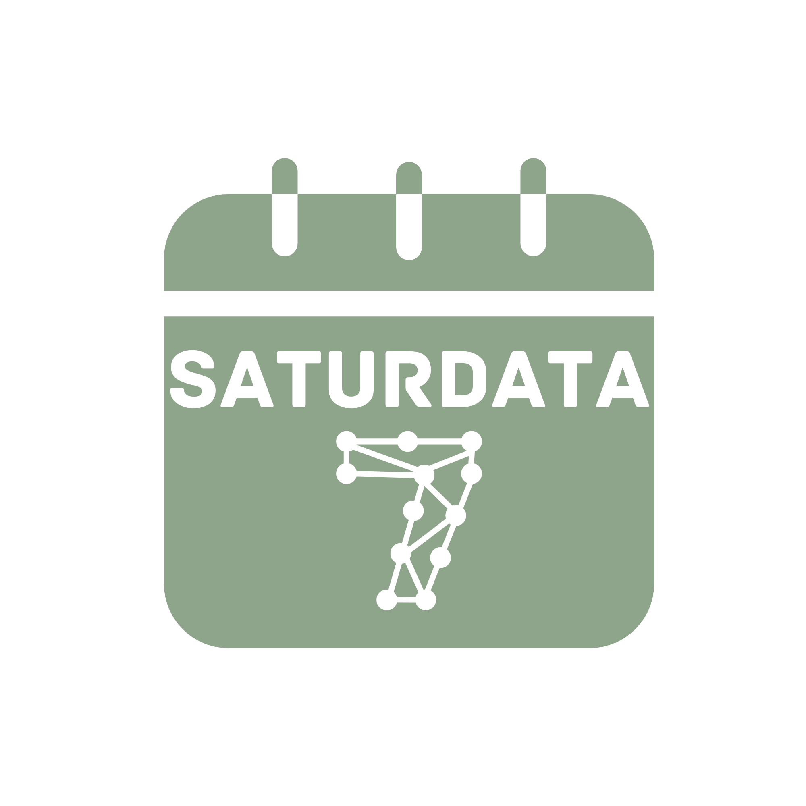

Saturdata
The podcast by and for the data community
Humanizing the data world for the next generation of analysts, scientists, and engineers. Join hosts Shifra Williams and Sam LaFell every weekend as they share the journey of building data careers - the wins, the struggles, and everything in between.

About
Episodes
Guest appearances
Connect
Ready to join the Saturdata community? Follow us for the latest episodes, behind-the-scenes content, and connect with fellow data enthusiasts. Let's build the future of data careers together.